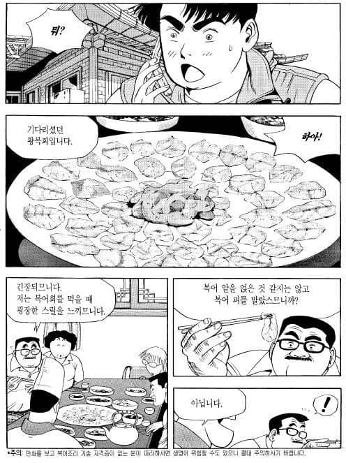
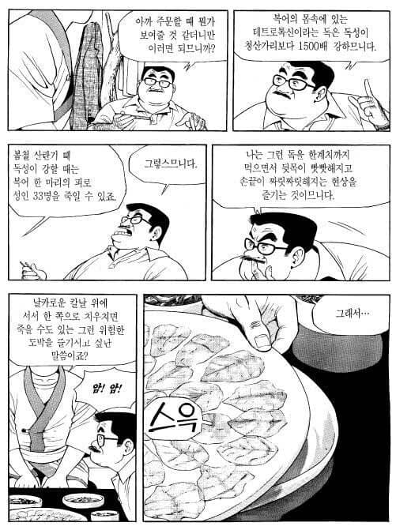
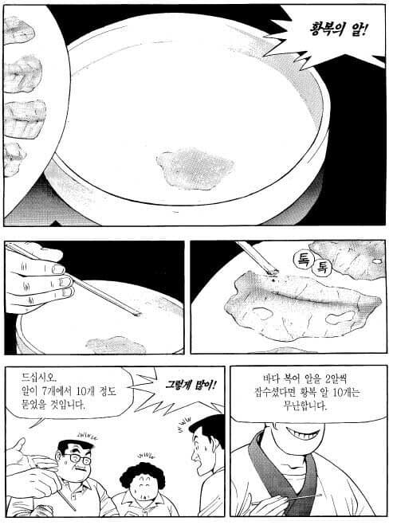
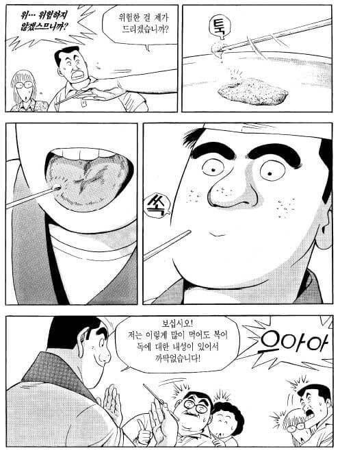
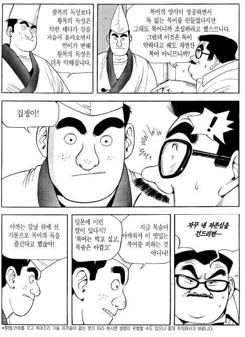
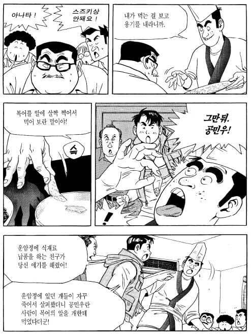
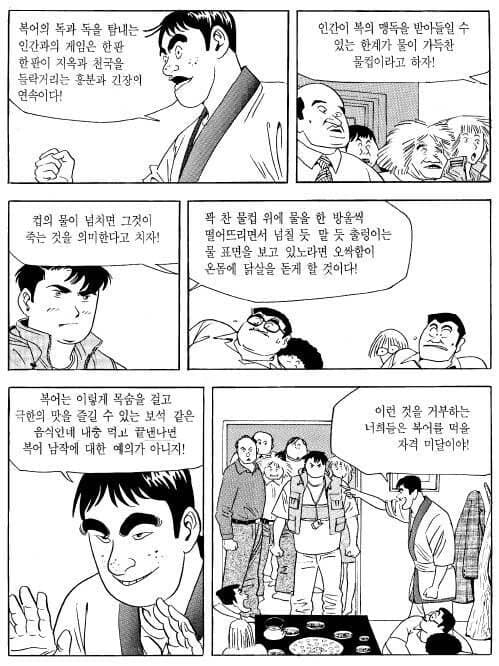
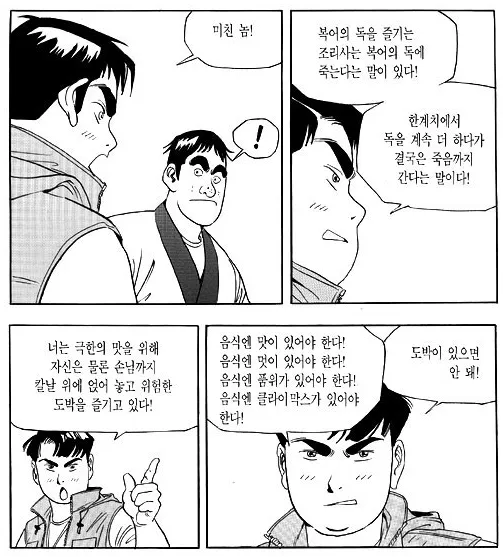
복어독이 있는 알을 먹으면 안된다고 얘기해놓고
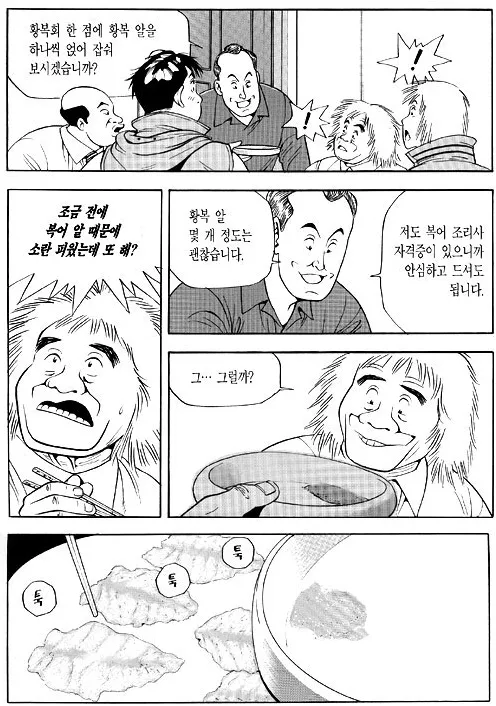
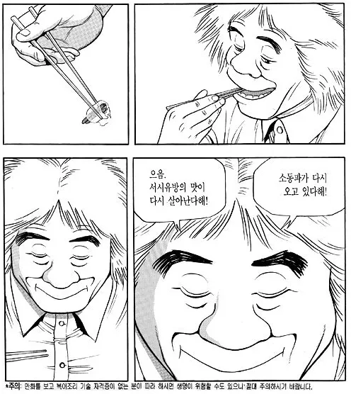
분위기 안산다고 바로 다음 장에서 회에 복어알 발라서 먹음.
당시엔 복어알을 먹고 뒤지란거야 말란거야 싶었는데
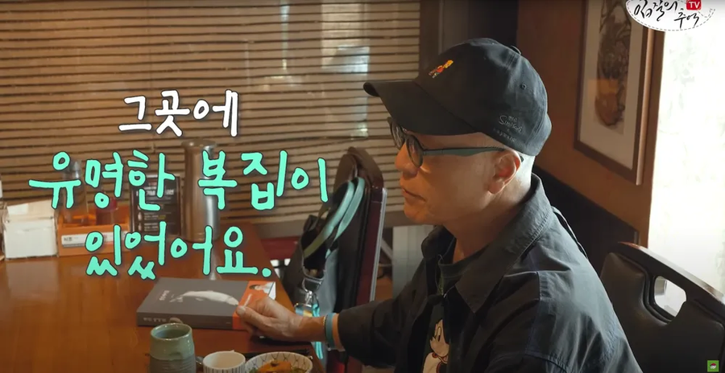
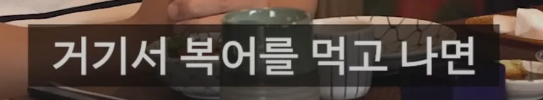
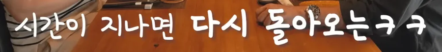
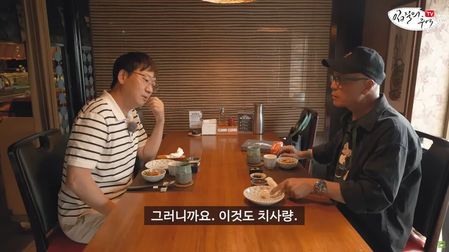
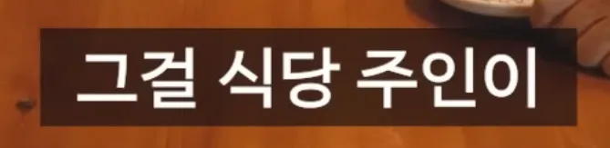
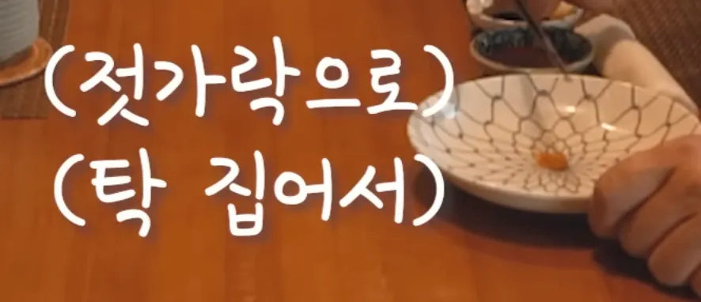
알고보니 그냥 취재한 내용을 그대로 그린 거였음
댓글
수집 당시 댓글 18개
배똘 · 1 일 전
어느 지역 쫄복은 독 없다고 잡으면 바로 먹고 그랬다는데 미친거 같음
지나가는김개붕 · 1 일 전
복어 히레 사케는 그냥 맛있는거고 핑핑 도는 건 취해서 그런거야...
배똘 · 1 일 전
그냥 데워서 같은양 먹어봐도 더 취하던데
지나가는김개붕 · 1 일 전
데운 술은 술이 빨리 돔...
닌닌이다 · 1 일 전
복어지느러미술 몇번 마셔봤는데 아무 느낌 없던데 양식이라 그런가?
배똘 · 1 일 전
일하다가 공산품? 같은 지느러미로 처음 마셧을땐 냄새만 좆같더니 다른 가게서 일할때 있던건 좀 통통하니 좀 다르던데 옛날에 만들어 둔거랬던가 암튼 내가 직접 잘라둔 것도 말려서 먹었을때도 좀 더 취기 오르던데 점심때 한 잔씩만 며칠 동안 그냥 데운사케 히레사케 번갈아 마셨는데 분명 차이 났음 사케 반잔 정도 느낌 그냥 플라시보인가 어차피 다 양식복일텐데
별의귀환 · 1 일 전
그래도 지 입에 들어간 젓가락 재사용은 안하네 ㅋㅋㅋ 복어알은 먹여도
프로쎾써 · 1 일 전
SaulGoodman · 1 일 전
식객민웈ㅋㅋㅋㅋㅋㅋㅋㅋ
돈데보이 · 1 일 전
지금의 현실은 바로 영업정지에 제공한 당사자는 철창행이다. 사람마다 독이 치명적일수도 있고 덜할수도 있는데 누가 덜하고 더할지 어떻게 알며 복어독은 해독제가 없어서 살인행동이다
컬러브 · 1 일 전
복어도 이해 못 하는 인간의 식성
Montmartre · 1 일 전
년차복학생 · 1 일 전
내가 저 만화 보고 나이 들어서 복어집 가서 알 달라고 하니까 자기네 복어는 양식이라 알에 독 없다고 하더라. ㅋㅋㅋ
여름노을 · 1 일 전
옛날 기사 생각나네 형편이 어려워서 시장에서 생선 쓰레기 버리는데에 멀쩡한 생선 있길래 집 갖고가서 국 끓여서 남편 먹었더니 원인 모르게 죽고 주변 사람들이 장례 치뤄주려고 왔길래 줄 건 없고 생선국 끓여놓은건 있어서 대접했더니 그 사람들도 죽어서 나중에 알고보니 복어여서 버렸던거를 주워서 국 끓인거..
1루2틀3일4흘 · 1 일 전
방화광 · 1 일 전
암컷이다. 아재네
버디언 · 1 일 전
그런데이것은틀렸습니다 · 1 일 전
식객민웈ㅋㅋㅋㅋ